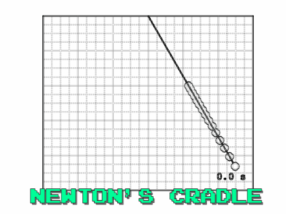

This blog post came about after watching a youtube video of Newton's Cradle in a research group meeting. My research group is a made up of cloud modellers. Some of us work with small one dimensional cloud models investigating how water and ice content vary in time, while others use larger scale three dimensional models, which also include the spatial developments of cloud structures. The enjoyment we gain from solving problems is one thing we all have in common. I guess that is the ultimate drive for any researcher. The problem Matt asked us this particular week was "Can we model Newton's Cradle?".
To save this post from becoming an essay, I've broken the problem down into three seperate blogs. The first part was focused on defining the problem, the second part, solving the problem and this final part will be the modelling.
Modelling the problem
I initially started by modelling a single pendulum using the solutions found in the last blog. Then modelled a fifteen seperate pendulums defining the length of each of them. However, I found that the pendulums never realigned and became in phase again. Hence, I found that it was key to select the lengths of the pendulums based on their frequency,
and time period,
We want to ensure that we choose pendulums, such that the time periods of each of the individual pendulums are a multiple of one another. Say we want pendulum 1 to complete $n_1$ swings in a time $T_n$, then this can be generalised to say that pendulum $i$ completes $n_i$ swings in a time $T_n$,
We need to solve this to find the lengths of the individual pendulums, $L_i$,
Using this equation and defining a time $T_n$ where all $N$ pendulums come back into phase one another. Say,

 I have used matlab to produce this code, which is available to download here.
I have used matlab to produce this code, which is available to download here.